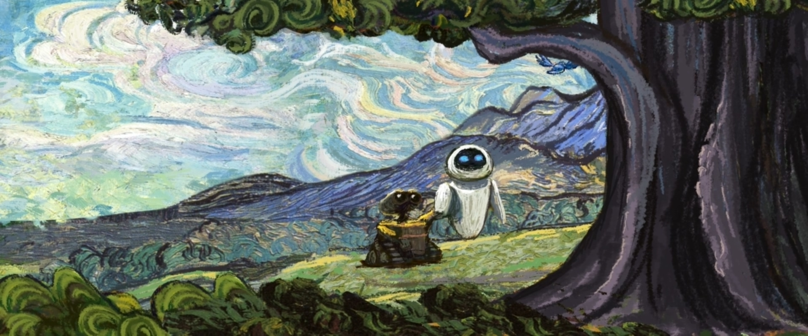
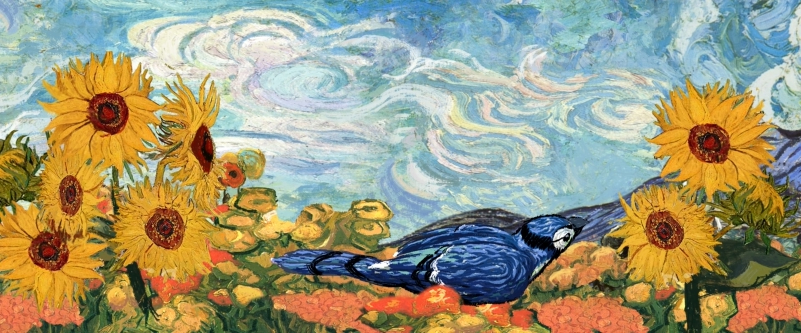
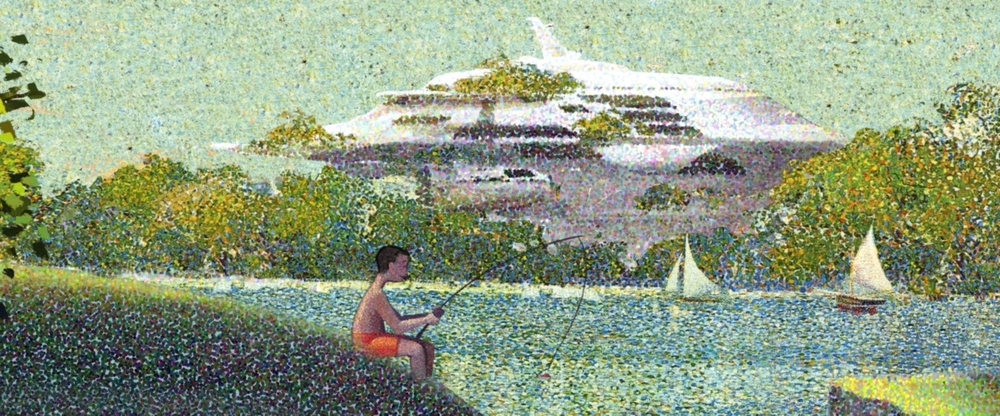
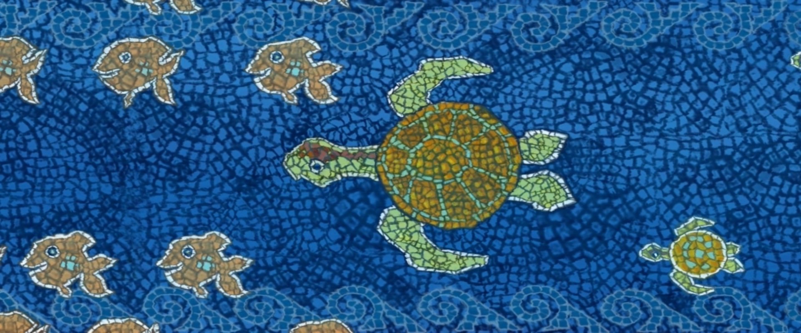
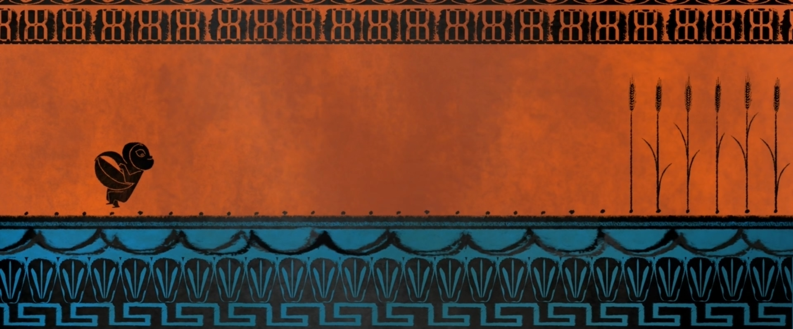
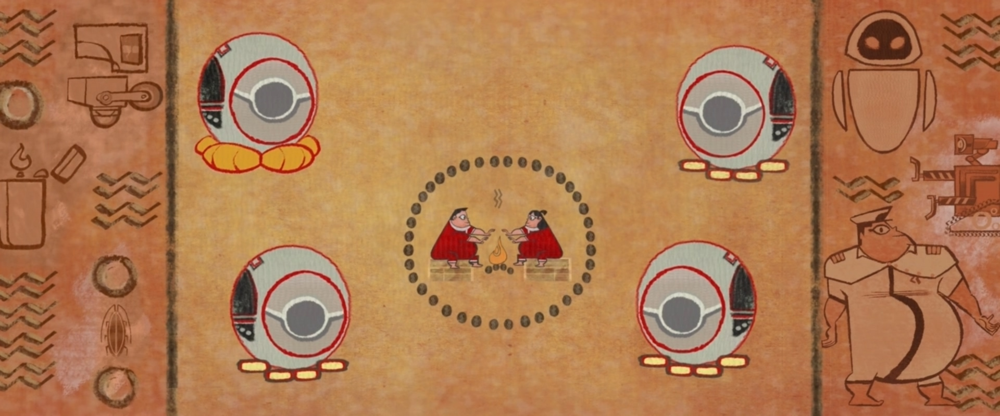
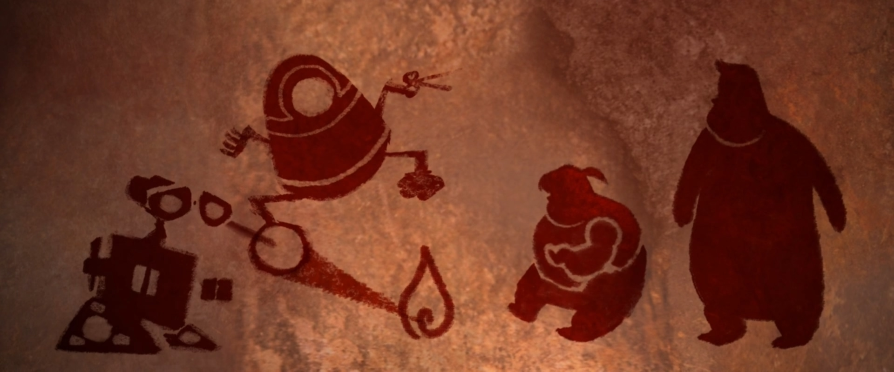
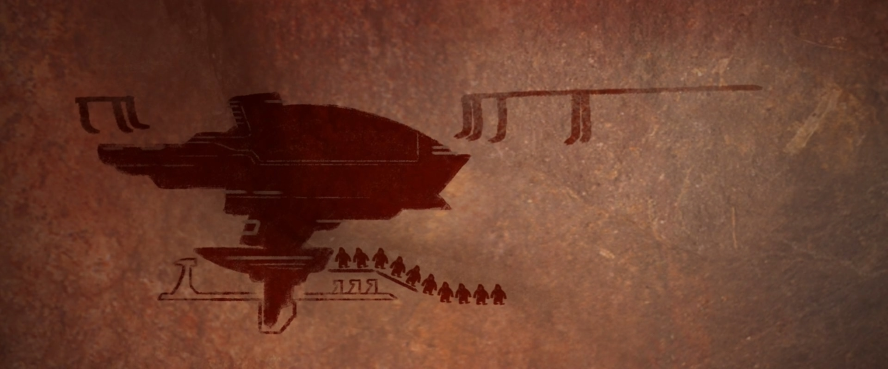

DIRECTED BY
ANDREW STANTON
PRODUCED BY
JIM MORRIS
CO-PRODUCED BY
LINDSEY COLLINS
EXECUTIVE PRODUCER
JOHN LASSETER
ASSOCIATE PRODUCER
THOMAS PORTER
ORIGINAL SCORE COMPOSED & CONDUCTED BY
THOMAS NEWMAN
ORIGINAL STORY BY
ANDREW STANTON, PETE DOCTER
SCREENPLAY BY
ANDREW STANTON, JIM REARDON
PRODUCTION DESIGNER
RALPH EGGLESTON
FILM EDITOR
STEPHEN SCHAFFER
SUPERVISING TECHNICAL DIRECTOR
NIGEL HARDWIDGE
SUPERVISING ANIMATORS
ALAN BARILLARO, STEVEN CLAY HUNTER
DIRECTOR OF PHOTOGRAPHY - CAMERA
JEREMY LASKY
DIRECTOR OF PHOTOGRAPHY - LIGHTING
DANIELLE FEINBERG
SOUND & CHARACTER VOICE DESIGNER
BEN BURTT
PRODUCTION MANAGER
ANDREA WARREN
CHARACTER ART DIRECTOR
JASON DEAMER
SETS ART DIRECTOR
ANTHONY CHRISTOV
SHADER ART DIRECTOR
BERT BERRY
GRAPHICS ART DIRECTOR
MARK CORDELL HOLMES
CHARACTER SUPERVISOR
BILL WISE
SETS SUPERVISOR
DAVID MUNIER
EFFECTS SUPERVISOR
DAVID MACCARTHY
TECHNICAL PIPELINE SUPERVISOR
JOHN WARREN
CHARACTER MODELING LEAD
JASON BICKERSTAFF
CHARACTER SHADING LEAD
ATHENA XENAKIS
SET MODELING LEAD
KRISTIFIR KLEIN
SET SHADING LEAD
CHRISTOPHER M. BURROWS
SET DRESSING LEAD
DEREK WILLIAMS
CROWDS SUPERVISOR
MARK T. HENNE
RENDERING SUPERVISOR
SUSAN FISHER
"DOWN TO EARTH" MUSIC BY
PETER GABRIEL AND THOMAS NEWMAN
LYRICS BY
PETER GABRIEL
PERFORMED BY
PETER GABRIEL, FEATURING THE SOWETO GOSPEL CHOIR
CASTING BY
KEVIN REHER, NATALIE LYON
CAST
WALL•E
BEN BURTT
EVE
ELISSA KNIGHT
CAPTAIN
JEFF GARLIN
SHELBY FORTHRIGHT, BNL CEO
FRED WILLARD
AUTO
MACINTALK
M-O
BEN BURTT
JOHN
JOHN RATZENBERGER
MARY
KATHY NAJIMY
SHIP'S COMPUTER
SIGOURNEY WEAVER